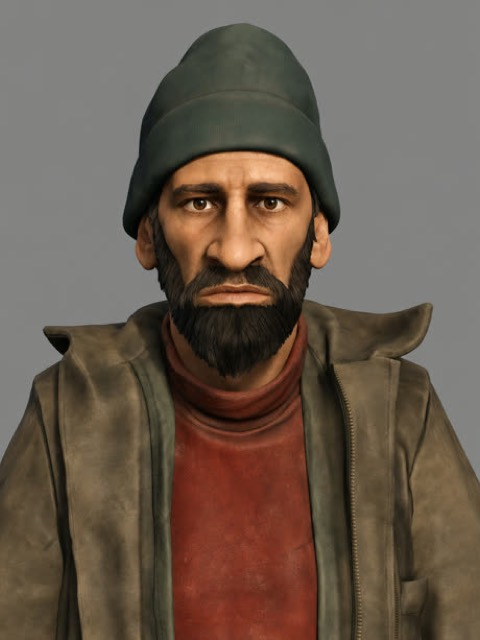
Vasile
The bearded drunk who does all the talking and is always wrong.
characters/vasile/
Storyboard · all episodes
The storyboard, characters and script for the whole series — one tab per episode. Episode 3 is drawn in a different look, so its cast appears twice.
Click any image to like it, dislike it or leave a comment.
The permanent cast. They carry episode 1 outright and they are what the migrants walk into in episode 2 — so every one of them appears in both.

The bearded drunk who does all the talking and is always wrong.
characters/vasile/
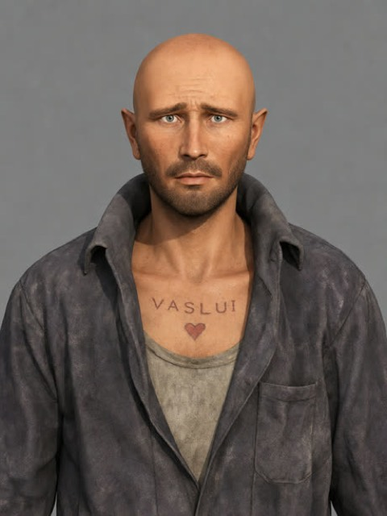
Vasile's bald, literal-minded sidekick, who never puts down his bloody axe.
characters/viorel/
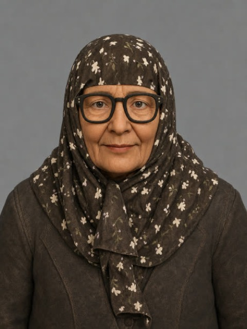
The old woman who runs the granny gang and throws slippers at people's heads.
characters/vasilica/
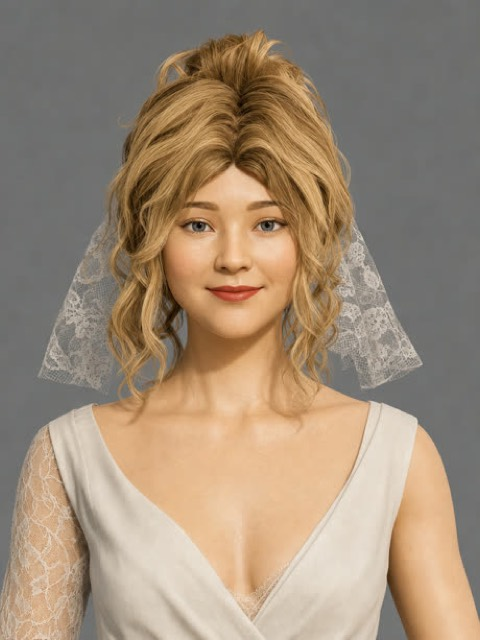
The bride with a leg in a cast, and the one clean pretty thing in the village.
characters/valerica/
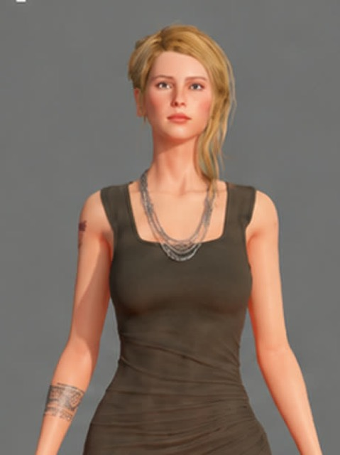
The Saint of Vaslui, the one righteous soul trying to save the village from its sins.
characters/alina/
The pig with the gold Vaslui chain, the show's icon and leader of the animal revolution.
characters/valeriu/
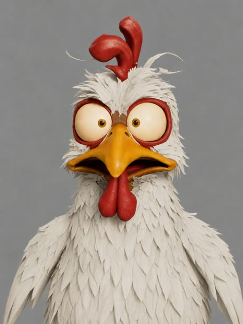
The chicken plotting the animal revolution alongside Valeriu.
characters/vera/
The corrupt mayor who takes bribes in front of the people who elected him.
characters/bribeanu/
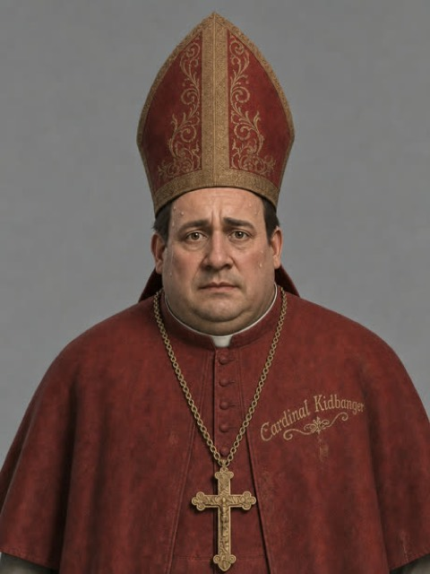
The visiting cardinal, permanently sweating and deeply aware of his own name.
characters/kidbanger/
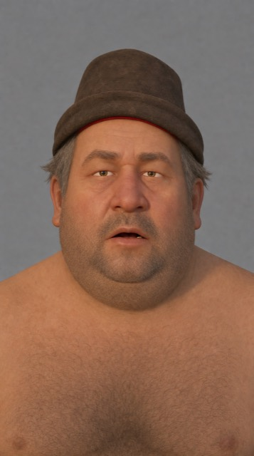
The heavy old drunk, and the only villager whose name does not start with V.
characters/radu/
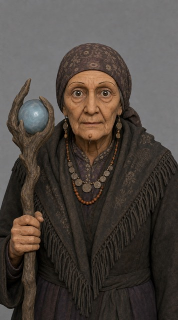
The village witch, still waiting for a name.
characters/vrajitoare/
They arrive up the river Bârlad, watch the village for about ninety seconds, and leave. Two of them speak; the rest carry the reaction cuts, which is where most of the episode's comedy lives. They are the reasonable people in the story — Vaslui is the punchline, not them.
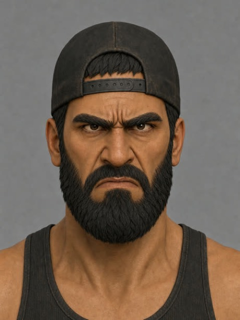
Plays Muhammad, the leader of the migrants who land in Vaslui.
characters/migrants/tarek/
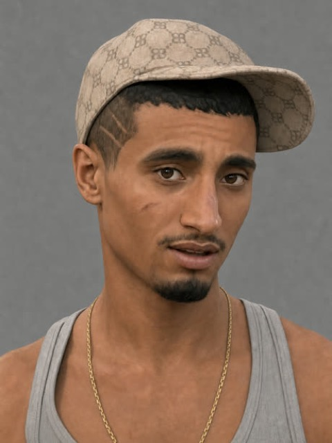
Plays Ahmad, the migrant leader's deputy.
characters/migrants/youssef/
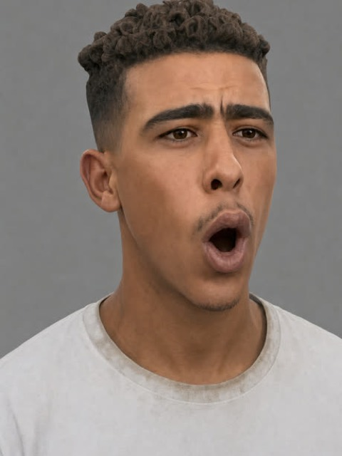
A teenage migrant on the boat, usually caught mid-shout.
characters/migrants/omar/
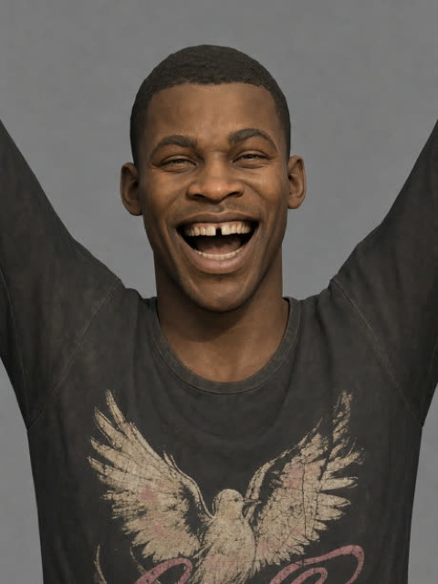
A migrant on the boat with an enormous gap-toothed grin.
characters/migrants/ibrahim/
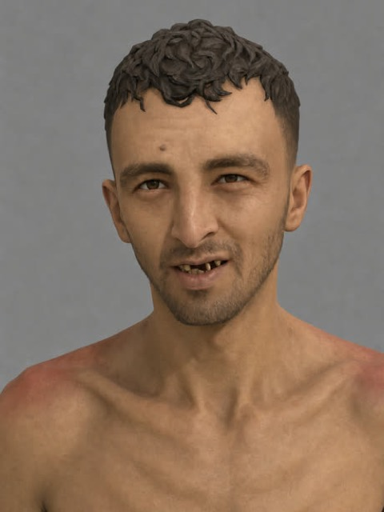
The thinnest migrant on the boat, still dripping from the river.
characters/migrants/hakim/
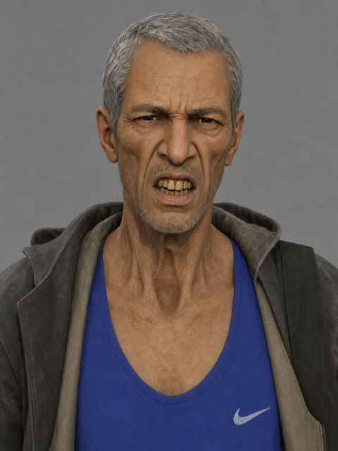
The oldest migrant on the boat, at about fifty.
characters/migrants/driss/
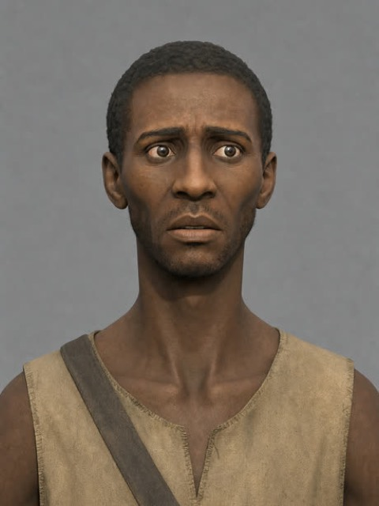
A lean, long-necked migrant on the boat.
characters/amadou/
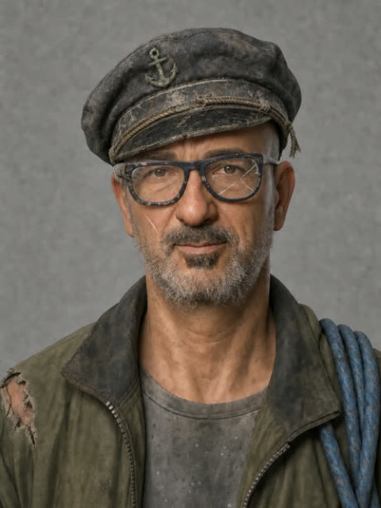
The smuggler who ran the migrants' boat up the river.
characters/migrants/captain/
Status: client's draft, saved verbatim. Changes expected. From Avihai, 29 Aug 2026. This is the source of truth for the episode — the premise text in the folder README is superseded by it. Nothing below has been rewritten or punched up, with two exceptions recorded here:
29 Aug, Avihai: the arrival was changed from the sea/coast to the river Bârlad.
Vaslui is landlocked, so a coast could not exist there; the Bârlad genuinely runs through the
county. Reference photo: ../assets/reference-river/. Only the two arrival/departure lines
were touched — every other beat is exactly as written.
30 Aug, Avihai: the pig's entrance changed. He no longer walks up to the migrants —
he arrives by catapult. About two seconds are added ahead of the Mona offer: the
tractor-mounted catapult with Valeriu loaded in the tray instead of a stone, the old women
firing it, the pig flying, and the landing. Only that one bullet was touched; the Mona offer
itself and every other beat are exactly as written. Prop already built:
../../../props/catapult-tractor/.
Immigrants arriving with the boat up the river Bârlad — the real river that runs through Vaslui county, past Muntenii de Jos. Narrow, brown, half-choked with reeds, steep eroded earth banks, broken concrete in the shallows, flat dry farmland either side. Not a sea crossing and not a coast: they have come up a muddy inland river and this is where it runs out.
As they get off the boat and go to land (vaslui village):
IMMIGRANT LEADER (big arab with arab accent, emotional):
"Yalla shabab we finally made it to Europe. We left our homes, our families, paid all the money that we had. All for this moment to start a new life in Europe!"
Then they see everything going on in the village (scene 2). Shots changing between village events and their faces. With each shot back to their faces they look more and more shocked.
Village events:
Immigrants looking completely shocked.
ARAB LEADER:
This is what we sacrificed everything for?!
Screams Allaaaaaaaaa (looks at the sky throwing his hands up in the air).
Continues to his deputy standing next to him:
"Ahmad get the boat!"
AHMAD (to leader):
"But Muhammad, we came all this way…."
LEADER (to Ahmad):
"Get the boat Get the boat Get the kusheli ochtak boat" Ya iben sharmuta….
Long curses in Arabic continue while immigrants get back on the boat and go back down the river the way they came.
Shot zooms out to see Mayor Bribeanu in the EU headquarters with politicians watching all of this on a screen.
BRIBEANU (to the politicians, speaking with confidence):
"See, I told you. All you have to do is place some of our Vasluians in your port cities and your immigration problems are over"
EU POLITICIAN (to Bribeanu):
"Mayor Bribeanu — you're a genius!"
(Other EU politicians in the room nodding their heads in approval.)
Wheelbarrows of cash come in the room and are dumped on the table for Bribeanu to take.
He does an evil laugh while the money is being dumped on the table.
Recovered episode 3 reference board. Production notes below reflect the original September 9 board; later shot versions are documented in the episode folder.
Episode 3 is THE VASLUIANS — the whole cast redrawn as flat yellow 2D cartoon characters. It is not the series' 3D look, so every character exists twice: the 3D version on the cast tab, and the version below. Same identity, same wardrobe, same props; only the drawing changes.
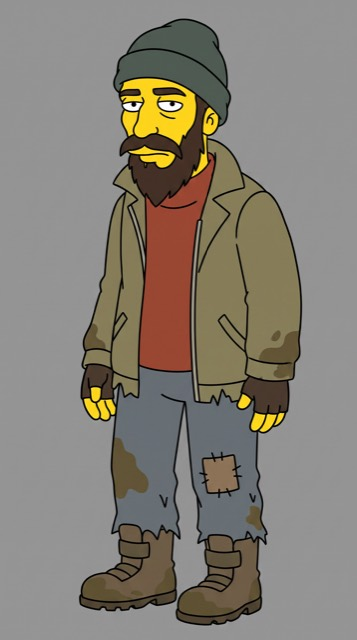
The bearded drunk who does all the talking and is always wrong.
cast/vasile-simpsons.png
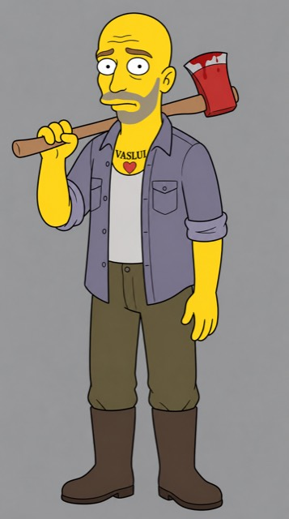
Vasile's bald, literal-minded sidekick, who never puts down his bloody axe.
cast/viorel-simpsons.png
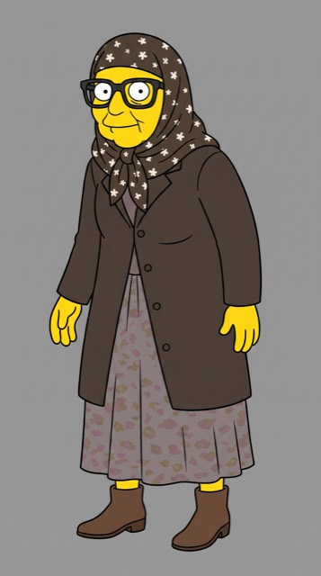
The old woman who runs the granny gang and throws slippers at people's heads.
cast/vasilica-simpsons.png
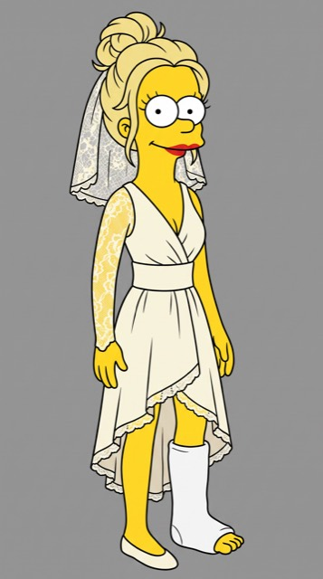
The bride with a leg in a cast, and the one clean pretty thing in the village.
cast/valerica-simpsons.png
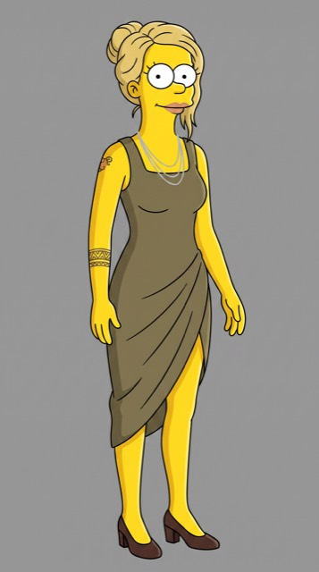
The Saint of Vaslui, the one righteous soul trying to save the village from its sins.
cast/alina-simpsons.png
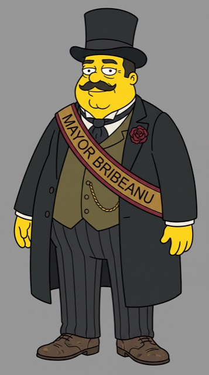
The corrupt mayor who takes bribes in front of the people who elected him.
cast/bribeanu-simpsons.png
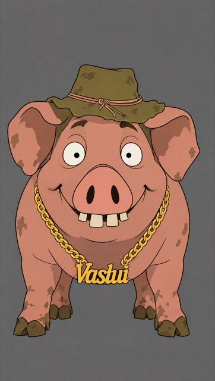
The pig with the gold Vaslui chain, the show's icon and leader of the animal revolution.
cast/valeriu-simpsons.png
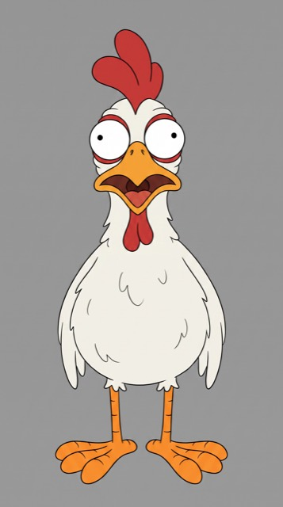
The chicken plotting the animal revolution alongside Valeriu.
cast/vera-simpsons.png
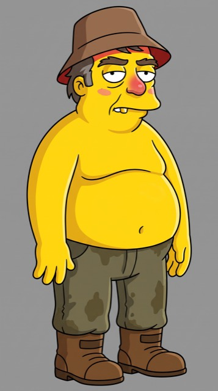
The heavy old drunk, and the only villager whose name does not start with V.
cast/radu-simpsons.png
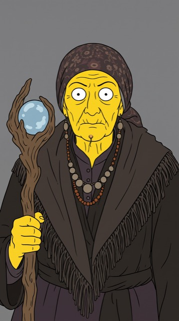
The village witch, still waiting for a name.
cast/vrajitoare-simpsons.png
Standalone pieces on plain grey, built to be dropped into a shot rather than to stand on their own. Same flat look as the cast.
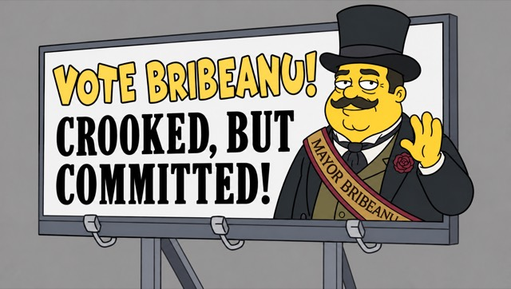
VOTE BRIBEANU! · CROOKED, BUT COMMITTED!
NoteThe mayor waving off a roadside hoarding, top hat and sash, a rose in the lapel. The joke is entirely in the second line, so the lettering has to stay legible at whatever size it ends up in frame — plan an insert if it is ever far from camera.
assets/prop-billboard-bribeanu/
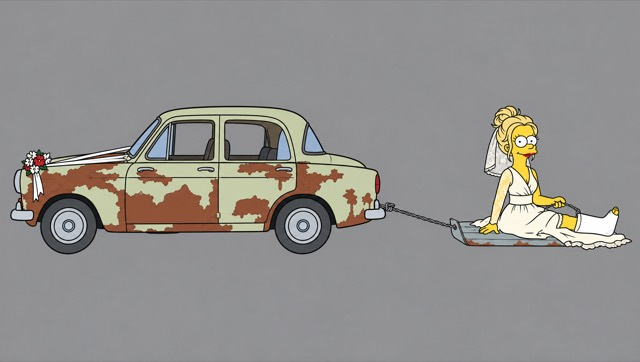
Scene 3 — and the bride is not inside it
NoteA rusted-out saloon with wedding flowers and ribbons on the boot, towing Valerica behind it on a sheet of metal by a chain — veil on, plaster cast on, entirely unbothered. The script has her sitting in the back; this take drags her instead, which is funnier and worth a decision before the shot is blocked.
shot-03-church-wall-mona/comp/
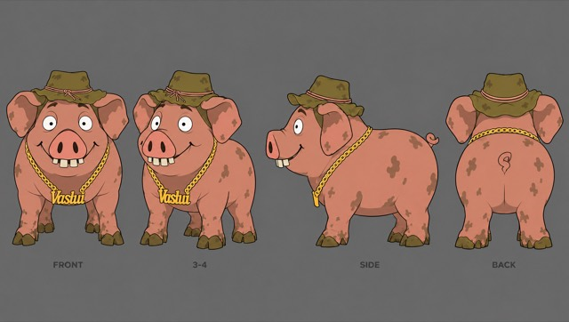
FRONT · 3-4 · SIDE · BACK
Scene 1 straight through to scene 3, as one move: the camera comes through the cloud layer, the title settles in, and it keeps going — down over the village, into the street, up to the church, and finally onto the wall. This strip updates as frames are approved.
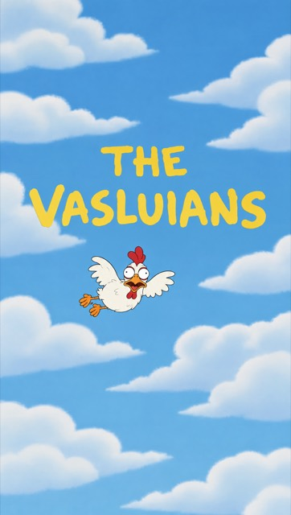
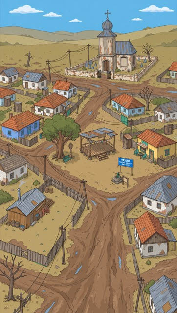
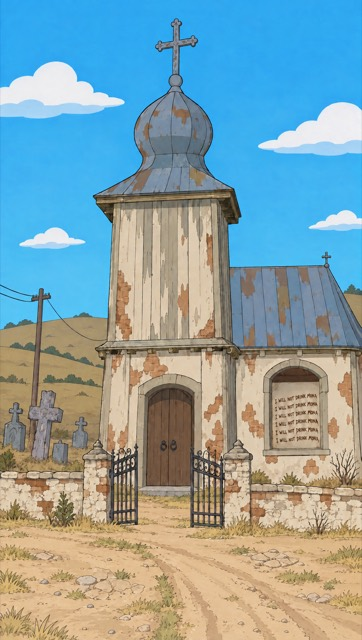
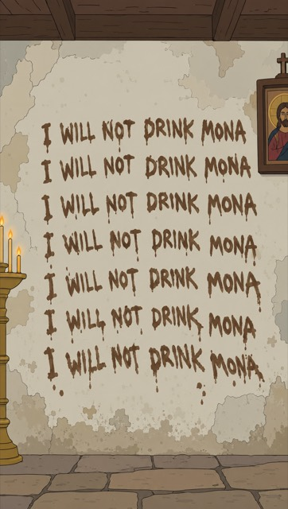
Both church plates came from the other session working on scene 3; the two village frames were built against them so the sequence matches. One frame is still missing — the step through the door, between the exterior and the wall.
From Avihai, 9 Sep 2026. He flagged it may still shift. Music is the opening's own register crossed with manele.
Blue sky, white clouds part. The camera pushes through. THE VASLUIANS appears.
The camera dives through the lettering and drops into Vaslui — dirt road, pantile roofs, leaning power poles, sagging wires.
The church; a wedding inside. Outside the wedding car waits with ribbons and Valerica already in the back. Valeriu finishes his last line in the mud — I WILL NOT DRINK THE MONA — drops the hoof, picks the bottle up and drinks. Jumps in and drives off with her. The bottle stays with him for the rest of the film.
A tractor outside the distillery with a concrete mixer hitched behind it; Viorel is already in the drum with a bottle, waiting. Inside: vats, copper pipework, crates to the ceiling. End of shift — Vasile lights a cigarette in the doorway, inside an alcohol plant. He walks out; behind him the whole distillery goes up in blue flame. He does not turn round. Neither of them notices the fire.
In the street, the village creep closes in on a young woman. Vasilica, on the bench at the village entrance, draws a slipper and throws it. It hits him square; he lands in a wheelbarrow. She collects her slipper, takes the handles and sets off with him in it.
Tractor, wheelbarrow and wedding car all reach the last corner at the same moment and nearly collide. Throughout: a column of smoke standing over the village.
A big brown puddle in the middle of the village. An old torn sofa standing in the water, an old television on a crate facing it, its cable running down into the puddle. They all sit. Vasilica tips the wheelbarrow and the creep rolls out face down. The television sparks, smokes, and dies. Black.
Aliens defeat every army on Earth. Humanity’s last hope is a village of drunks. Script from Nir, 16 September 2026. The references below identify the existing cast; the generals and alien portraits are approved; space costumes remain to be designed.
The cut as it stands: the opening invasion beats, then the unbroken descent from space through Europe and Romania into the mayor’s office. Sound effects only, no music.
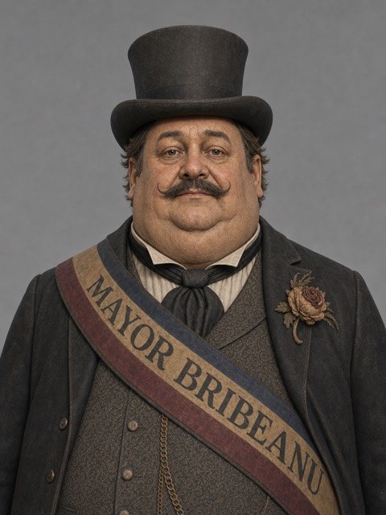
The mayor who pretends not to understand English until the generals pay him.
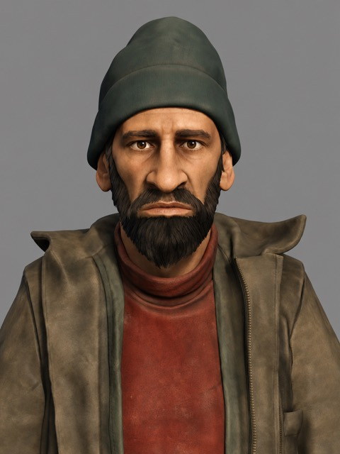
One of the two Vasluinauts, sent into space with a bottle and a pitchfork.
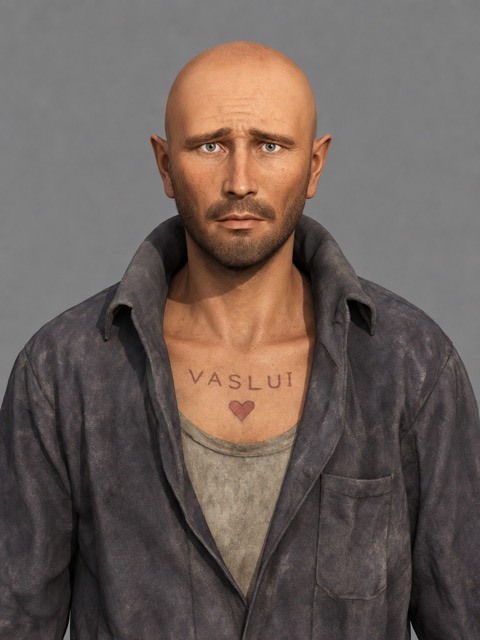
The other Vasluinaut, who takes his axe into space.
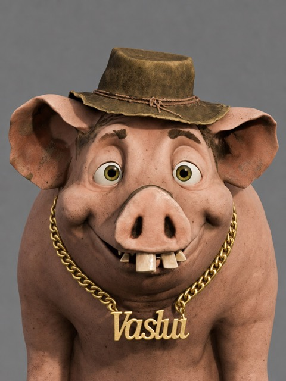
The pig who pilots the onion ship and pumps the Mona.
The heavy old drunk who launches the onion ship.
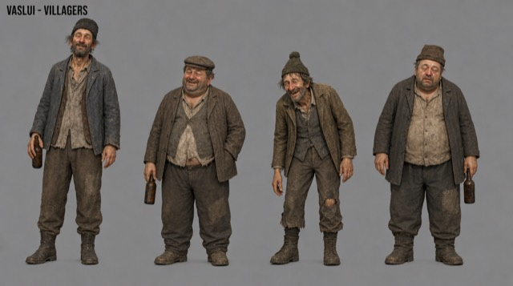
The drunk men in the crowd at the launch.
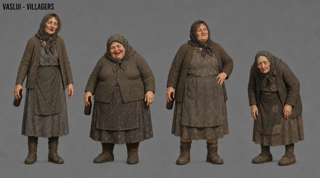
The village women in the crowd at the launch.
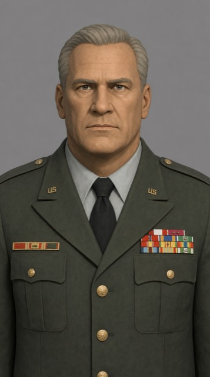
The silver-haired general sent to Vaslui to beg the mayor for help.
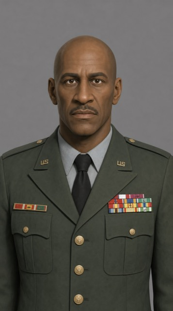
The second general sent to Vaslui to recruit the village.
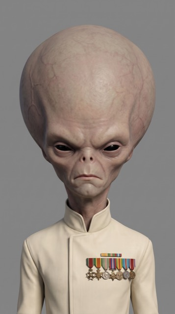
The giant-skulled clerk who runs the invasion, medals and all.
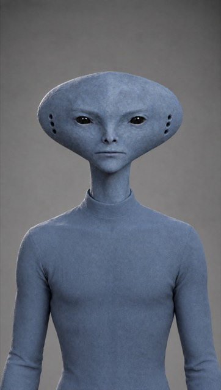
The ordinary soldiers: the commander’s species with a smaller skull and a teal work jumpsuit.
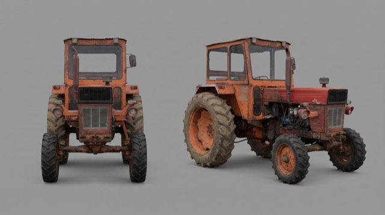
A battered 1970s Romanian farm tractor, faded orange cab and red bonnet, rebuilt in the series look from a real photo out of Vaslui. Front view and three-quarter view on one sheet. The Vasluians bring it out of the ship with them. Approved 21 Sep 2026.
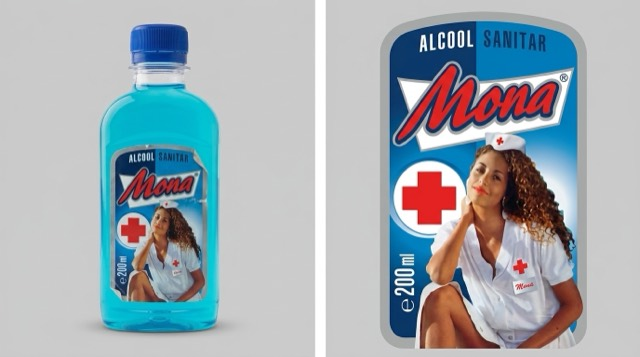
The rubbing alcohol that wins the war, and the label for the giant tank.
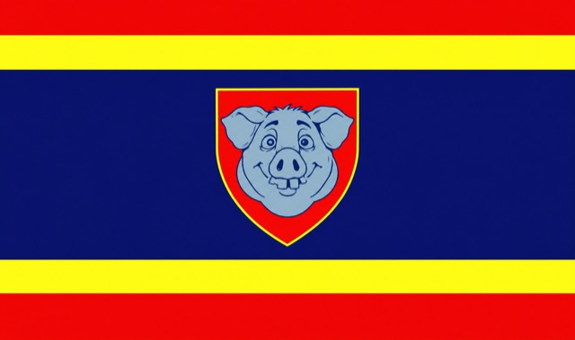
The real county flag, with Valeriu's face filling the shield in place of the beehive, fish and ox. Goes on the ship and on the spacesuit shoulders.
Still to design: Vasile and Viorel’s spacesuits, Valeriu’s spacesuit, the onion ship (inside and outside), alien mothership, mayor’s office, Mona tank and hose. The chest patches read VASILE / VIOREL; the shoulders carry the Vaslui flag above.
Where the generals beg the mayor for help.
The mayor’s gold-trimmed office, far too grand for the muddy village outside its window, and the door side of the same room — mahogany door, gold trim, red damask wallpaper, parquet and an oriental rug.
The village the ship takes off from.
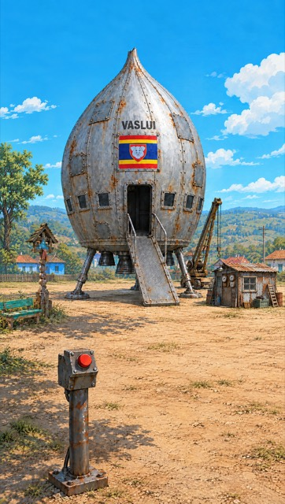
Episode 1's village square, the wooden stage replaced by the ship standing directly on the ground — roughly twice the height of the surrounding cottages, braced by a small crane (not attached, so it can still fly), a low dingy maintenance shed, and a red launch-button post in the foreground. The tree stands clear of the ship's path. Updated 17 Sep 2026 for the ship's new onion-skin hull.
The onion ship, outside and in. Two interior directions are live in parallel, not yet picked between.
Redesigned 17 Sep 2026: the hull is now literal onion skin — pale papery ivory-cream, crinkled and striated like a real onion, with loose skin-flap repairs tied down with twine instead of welded metal patches. Replaces the earlier bare-metal version.
The pig pilot's cockpit, seen from behind the two seats: a flat starfield window (clean edge to edge, no side toning), analog 1980s dashboard, and the divider panel between the seats carrying the blue MONA button and the red skull-and-bottle emergency button, with two round MONA-dispenser ports set into the console above the buttons. A wall-mounted village TV hangs above the window — wooden cabinet, lace doily and trinkets on top — its screen showing a green radar/detector sweep instead of a broadcast.
A second, wider direction: the whole domed hold in one shot, with the cockpit built straight into the curved hull wall (no separate booth), a full ring of small square windows running around the room, and the same two MONA-dispenser ports above the console buttons. The same wall-mounted village TV hangs above the window here too, sized to fit the wider room. Not yet reconciled with the flat-wall crop beside it — both are approved takes on the same room, pending a final pick between them.
A close, head-on wall in the same domed hold: a large antique rug hung flat against the hull, a stencilled "WEAPONS" sign above it with a flashing red warning light, several of Viorel's hatchets and Vasile's pitchforks mounted on hooks over the rug in different sizes, and a rack of grenades below styled as the Mona brand — turquoise bodies with the MONA label in place of a standard frag grenade.
The giant Mona bottle strapped to the hull wall inside the ship, with the clear feed tube running up to the ceiling and a pressure gauge and red valve at its base. Picked by Avihai 17 Sep 2026 — this is how the Mona tank looks from now on.
The shared design, then each Vasluinaut — ready for space, inside the ship, and a full turnaround sheet. Swipe or use the arrows to see each character's other images.
Antique diving-style suit — mended canvas, panoramic glass dome helmet, Vaslui flag patch on the right shoulder. Shown empty; each lead gets dressed in this same design next.
Suited up for space, inside the ship without his helmet, and the full turnaround sheet (front/side/back plus face and patch close-ups).
Suited up with his red hatchet, inside the ship without his helmet, and the full turnaround sheet (front/side/back plus face and patch close-ups).
Same suit design adapted to his four-legged body, inside the ship without his helmet, and the full turnaround sheet (front/side/back on all fours plus face and patch close-ups).
The weapon that wins the war.
Where the aliens laugh, get drunk and end up on the barbecue.
A colossal, wide dark-gunmetal disc with a glass command dome on top, a continuous ring of dozens of gun turrets around the rim, radar dishes and antennas, and cold blue-white running lights — much bigger, more advanced and more threatening than the Vaslui ship.
The command bridge: a huge, modern, empty room with a tall curved dome window matching the ship's exterior and one central command chair/console facing it, clean and uncluttered.
The same command station reframed as a tall vertical shot: the chair centred in the middle of the frame, the console panel in front of it, and the curved window's starfield view above.
Ten story beats from the draft; shot timing is not locked.
Alien ships hover over familiar landmarks while the British narrator describes humanity’s defeat.
Generals ask Mayor Bribeanu to deploy the Vasluians. He claims not to understand their English.
Cash lands on the desk. Bribeanu switches to perfect English: “Deploy the Vasluinauts!”
Radu launches a battered onion-shaped spaceship from muddy Vaslui, with Valeriu at the controls.
The village ship approaches the alien mothership in space.
Vasile and Viorel emerge in antique diving-style spacesuits, carrying a bottle, pitchfork and axe.
The commander and crew watch the two villagers on their screen and laugh.
Valeriu drags the hose from the huge Mona tank; Vasile and Viorel attach it to the alien ship.
Valeriu presses the red button. Mona floods the ship; the aliens become drunk, then drop dead.
Inside the mothership, Vasile and Viorel spit-roast the alien commander and toast with their bottles.
Its first draft only: Alien spaceships seen hovering over major cities on earth (use known landmarks) Narrator voice in perfect British English: "the day we all feared is upon us. The destruction of all of humanity… The extra-terrestrials have found us, they are far more advance, and we cannot push them back any longer. Humanity has used all of it weapons and technologies. All has failed. We are doomed and this is our end. Unless… Army generals with mayor bribeanu in his office in Vaslui: Generals: Mayor Bribeanu, humanity is desperate and you might be our last chance of survival. We need the Vasluians against the alien invasion. Bribeanu sitting at his chair next to his desk: "you know my English not so good. We are simple Vasluians. Please try to speak in a way that I will understand." Generals looking at each other. One rolls his eyes at the other and starts putting cash on Bribeanu's table. "do you understand us better now?" Bribeanu switches to perfect Shakespearean English: "why certainly kinds sirs. You have thrown down the gauntlet and the noble Vasluians shall be delighted to oblige" Bribeanu gets up from his chair raising his voice and pointing his finger in the air: "Deploy the Vasluinauts!" (Vasluian Astronauts) Scene changes to an funny looking crappy spaceship shaped like an onion, launching from the village (village surroundings look usual – muddy with drunk people around). Valeriu the pig is piloting the spaceship is a funny pig spacesuit. The vasluian spaceship gets to space and is facing the alien ships and is face to face with the main alien mother ship. Vasluian spaceship opens and vasile and viorel go out into space – dressed in funny spacesuits (maybe like old scuba gear from 100 years ago), with names patches (Vasile, Viorel) on the top left chest), and on their side-shoulders the flag of Vaslui. Viorel is holding an axe. Vasile is holding an alcohol bottle in one hand and a pitchfork in the other hand. Cut to alien mothership where the alien commander is looking at his screen at vasile and viorel in space, and laughing Other aliens next to him in their spaceship also laughing. Cut to the inside of the Vasluian spaceship where the pig is next to a huge tank of mona (see the blue liquid and mona labels on the tank) and dragging a huge hose to the exit of the spaceship where vasile and viorel grab it and connect it to the alien ship. Valeriu the pig pressed the big red button on the mona tank and mona starts coming out from the tank through the hose in space and into the alien ship. The mona pours in and all the aliens start getting drunk – walking around like they are drunks losing control, and after a few seconds they all drop dead. Cut to next scene – vasile and viorel in their spacesuits on the alien mothership roasting the head alien on a spit over a barbecue (inside the alien ship) The alien is impaled and is being grilled and rolled over the barbecue. Vasile and viorel raise their alcohol bottles and drink.
From Nir's draft, formatted and punched up. Changes are additive — every original beat is intact. Runtime target: 3:30–4:00. Ends on the drop of the Escape from Vaslui song.
FADE IN:
Wide. Crooked houses, a dirt road that has never met asphalt. Bottles. Everywhere, bottles — in the mud, on the fences, in a baby carriage.
Villagers young and old lie where they landed. A CHICKEN staggers past a GOOSE. Both are drunk.
VALERIU the pig lies flat on his back, belly to the sky, tongue out, bottles arranged around him like a shrine.
(Hold. Let it be quiet. Somewhere, a cow falls over.)
A broken wooden carriage pulled by a horse that has clearly given up rattles into frame. Standing in it: MAYOR BRIBEANU, 1880s suit, top hat, sash reading MAYOR.
MAYOR BRIBEANU
Fellow Vasluians! Kindly follow me and gather in the village square for an important
announcement from our church community leader.
Villagers look at each other, puzzled.
VASILE (not moving)
We have a square?
A wooden stage held together by belief. On it: MAYOR BRIBEANU and CARDINAL KIDBANGER, in full crimson-and-white regalia and a tall mitre. He is sweating through it.
The crowd: worn-out villagers, every one holding a bottle. Animals mixed in among them. VASILE and VIOREL at the front. Viorel's axe is on his shoulder, as always.
MAYOR BRIBEANU
Honourable Vasluians. The Cardinal himself has come to Vaslui to bring you a message
from our highest religious order. Cardinal Kidbanger —
(A woman in the crowd grabs her child and hides him behind her back.)
MAYOR BRIBEANU (cont'd)
— you have the Vasluians' ears.
CARDINAL KIDBANGER
Thank you, Mayor Bribeanu.
Bribeanu coughs. Pointedly.
CARDINAL KIDBANGER
Ah. Yes. Of course.
He produces a thick stack of cash and hands it over. Bribeanu pockets it without breaking eye contact with his constituents.
Two villagers exchange a look.
VILLAGER #1
Maybe electing a man named Bribeanu has not been our wisest decision.
VILLAGER #2
He ran unopposed.
VILLAGER #1
He ran unopposed twice.
The Cardinal unfolds a paper. His voice is already shaking.
CARDINAL KIDBANGER
My fellow Vasluians. It has been decreed that from this day forward, all forms of alcohol
will be banned throughout Vaslui.
(Silence. Absolute. A bottle slips out of someone's hand and does not break, because it lands on another bottle.)
Shots of stunned faces. Somewhere in the back, a goose faints.
CARDINAL KIDBANGER (faster, sweating harder)
But it's really not so bad if you think about it! We can go back to drinking water. Reading
books. Developing hobbies. Even showering more regularly. So it's not so bad. Right?
... Right?
A hand goes up.
VILLAGER #3
What if we drink it only for sanitation?
(He holds up a bottle. The MONA label is clearly visible.)
CARDINAL
No.
VILLAGER #4
What if we mix it with water? Then it's mostly water, right?
CARDINAL
No.
VILLAGER #5
What if we also use it as fuel for our carriages?
CARDINAL
No.
VILLAGER #6
What if we also share it with our children?
The Cardinal pauses. Something flickers.
CARDINAL
Hmmm. Children, you say —
MAYOR BRIBEANU (sharp)
KIDBANGER.
CARDINAL (snapping back, shaken)
No. No. Still no.
VALERIU the pig stands up in the middle of the crowd.
VALERIU
What if only the pigs still drink it?
(Beat. Nobody in the crowd finds this remarkable.)
The Cardinal looks out at a village where a pig has just asked a follow-up question, and something in him quietly dies.
CARDINAL
... Okay. No more questions.
He starts to fold the paper. Stops. Remembers.
CARDINAL (cont'd)
Oh — and one last tiny thing. Your village bar will now be turned into a library.
PUSH IN on the crowd. Watch the faces travel, one at a time, from disbelief to rage.
VIOREL takes the axe off his shoulder.
CARDINAL (turning to the Mayor, relieved)
Well. I think that went alright. They seem to be taking it rather well.
HARD CUT.
An OLD VILLAGE WOMAN — VASILICA — marches at the head of the mob holding a spike. On the spike: the Cardinal's mitre. (We do not need to see more than the mitre. It is funnier.)
Behind her, the entire village. Pitchforks. Shovels. Torches. Wheelbarrows at full speed.
They hit the church like weather. Bottles fly. Axes fly. Priests run and are, in passing, beaten. Somebody has brought the pig. The pig is helping.
DISSOLVE TO:
Smoke. Embers. A charred cross leaning at an angle it will keep forever.
VASILE and VIOREL stand in front of it, looking at the ruin. Calm. Unhurried.
VASILE
It's a shame it had to come to that.
VIOREL
Yeah. But what can you do. They really didn't give us much choice.
VASILE
Yeah. I guess not.
They each open a bottle. They clink.
Vasile takes a long drink and looks at the smouldering church with something almost like affection.
VASILE
You know what the worst part is? Now we have to build a new one.
(beat)
Where else are we going to hide the țuică?
SMASH TO BLACK.
DROP: "ESCAPE FROM VASLUI" — MAIN TITLES.
Key frames generated for this scene: `scenes/s01_village_wide`, `scenes/s02_square_announcement`, `scenes/s03_church_ashes`.
The Game of Thrones opening, restaged in Vaslui County. The camera flies over a map of the county; at each land a village rises and an army marches out — pigs, drunks, geese, grannies and White Walkers. All five meet in the village square and bow to the king on the Vaslui Iron Throne. Brief from Nir, 24–27 September 2026. Vertical, about a minute, no dialogue.
Everything approved for the opening so far: the kingdoms from the drone, the county map with every kingdom inside it, and the ring transition.
Vaslui County in its real shape, every kingdom inside its own region, the capital in the middle. The map the opening flies over.
Winterfell. A muddy valley, a wall of hay bales and corrugated tin, dirty snow in the corners, grey-and-white banners.
Dragonstone. A black rock on a hill topped by a giant goose coop built like a fortress, black-and-red banners.
Highgarden. Endless rows of cabbages, arches of grapes and plums for the țuică, green-and-gold banners.
Beyond the Wall. A white snowfield, frozen trees, bluish light — the only colour is the blue of Mona.
King's Landing, Valeriu's kingdom — the land of the pigs.
The palace of Vaslui from outside, with the banners of every kingdom on its walls.
Inside the palace: the throne hall with the throne of axes in the middle.
Game of Thrones: the colossal wall of ice at the edge of the realm that keeps out the army of the dead. Vaslui: the same wall, built by the village out of junk frozen in ice — old Dacia cars, tractor tyres, washing machines and fridges, beer crates, hay bales, outhouses and barrels at the bottom, thousands of empty bottles frozen into the ice above, a rickety zig-zag staircase and a lift cage. The Angels on their geese fly over it into the Land of Always Hangover. Image 1: from the ground. Images 2 and 3: from the air, along the wall.
The ring sweeps across the camera from bottom right to top left and makes the cut, like the rings in the Game of Thrones opening. Take 2, the pick.
The diagonal transition rendered in 3D, 5 s, 1080×1920. There is also a version with a transparent background for the edit.
The brass ring with red relief and caricatures from the series — the ring the transition is built on.
The brooch the Vaslui Angels wear.
Every character is our Vaslui DNA plus one Game of Thrones house. Each army parodies a house — its colours, sigil and style — and every piece of armour is built from village junk. Two versions per character; swipe to compare. Valeriu is approved; the rest are waiting for a pick.
Game of Thrones: Tywin Lannister — the gold-and-crimson house that always pays its debts. Vaslui: our Valeriu, same face and buck teeth, his gold Vaslui chain worn over rusty village-made armour. Image 1: the close-up. Image 2: on all four legs in full armour — greaves, steel hoof caps, a rump plate with the tail poking through — and his mark of rank, a crimson royal cloak cut from an old velvet theatre curtain, gold fringe, a golden pig sigil on the back and a sheepskin collar, trailing in the mud.
Game of Thrones: Jon Snow / Ned Stark, the grim lord of the North in a fur cape. Vaslui: Vasile as a young, handsome, noble lord — neat beard and beanie, a brushed sheepskin cape with the howling-dog brooch, a pitchfork held like a lord's spear, and a bottle of țuică holstered on his belt.

Game of Thrones: Olenna Tyrell, the Queen of Thorns — the sharpest, deadliest old woman in Westeros. Vaslui: her tall headdress is her own brown flowered headscarf, starched and folded high, the green gown is an embroidered tablecloth with golden cabbages instead of roses, garlic instead of pearls, and a house slipper as her sceptre. Glasses and flowered headscarf stay.
Game of Thrones: the Night King, ice-white skin and glowing blue eyes, who turns the living into his army. Vaslui: the blue is the blue of Mona — Viorel drinks it and it lights up his eyes. A crown of ice horns on his bald head, an ice beard, an iron-scale cloak, his axe frozen solid, and a window of clear ice in the armour showing his VASLUI ♥ tattoo. Image 2: Viorel a moment before — the same costume and pose, still a living man, before he drinks the Mona and turns to ice.
Game of Thrones: Drogon, the biggest of Daenerys's three dragons. Vaslui: Valentin, the series' own goose, in a black aviator cap with red goggles (the client's reference), a bicycle-seat saddle, baling-twine reins and dragon scales cut from beer cans. He sprays țuică instead of fire.

Valerica from episode 1 as an Angel. The official Vaslui Angels uniform from the game — a black leather biker jacket with the pink VASLUI'S ANGELS patch across the back — with a pink pleated skirt and white sneakers. Game of Thrones touches: Daenerys's platinum braids threaded with beer-bottle caps (a cap for every bottle she has won), a three-headed goose brooch, and her plaster cast with a goose drawn on it. Recreated in the style of Vasile, Lord of Drunkenfell. Front and back view, full length.

Alina from episode 1 as an Angel. The black leather Vaslui Angels biker jacket with the pink back patch, red dragon scales drawn on the sleeves, a red pencil skirt and black ankle boots. Game of Thrones touches: copper-red hair in Targaryen braids gathered into a braided bun, decorated with beer-bottle caps, and a three-headed goose brooch. Recreated in the style of Vasile, Lord of Drunkenfell. Front and back view, full length.

The third Angel, a new character. The black leather Vaslui Angels biker jacket with the pink back patch, a royal-blue satin skirt (a nod to Daenerys's blue gown from Qarth), a gold belt, gold necklaces and green rubber boots. Long dark braids threaded with beer-bottle caps and a three-headed goose brooch. Recreated in the style of Vasile, Lord of Drunkenfell. Front and back view, full length.
Game of Thrones: the Lannister army in crimson and gold. Vaslui: the same pig design as Valeriu — same face, eyes, brows, buck teeth and body — so the whole army is clearly his family, but with no gold chain and no hat. A helmet with ear holes, a crimson grain-sack tabard with a stencilled golden pig, a chainmail collar and a barrel-lid shield.
Game of Thrones: the Northern foot soldiers of House Stark. Vaslui: our village men in armour from the kitchen — a cooking-pot helmet, a washboard breastplate, a car tyre on the shoulder, a blanket cloak, a pitchfork for a spear, and in his pocket an opened Mona bottle with a rag stuffed in its neck, ready as a Molotov cocktail. Image 2: the whole army — eight different drunks, same kitchen armour and the same joke.
Game of Thrones: the Tyrell cavalry of Highgarden in green and gold. Vaslui: the village grannies charging on pigs, with a colander helmet, a folded duvet as padded armour, a Romanian woven-rug saddle, and a rolling pin raised like a sword. Image 2: the whole cavalry — six different grannies on six different pigs.
Game of Thrones: the wights who follow the Night King. Vaslui: the same village drunks in their everyday clothes, turned ice-white with Mona-blue eyes and icicles in their moustaches. Image 2: the whole army — eight different frozen villagers, men and women, empty frozen hands, every head different: one flat cap, a headscarf, a bald head, a comb-over, wild frozen hair, long hair, a bun, braids. Image 3: the same eight people a moment earlier, before Viorel's Mona turns them — ordinary villagers in their normal colours, in the same pose.
The real Vaslui shepherd who found a fallen drone in his field and became famous, turned into a Game of Thrones warrior. His own clothes made heroic: the grey fedora battered like a warrior's hat with a hawk feather, his black-and-red striped polo turned into a quilted war tunic in the same stripes, a leather jerkin with shoulder guards and a sheepskin cojoc cloak. He holds the drone controller like a weapon — bronze and iron, antennas like spear tips, glowing blue gems — and his drone hovers beside him: forged iron and bronze, runes, bat-dragon wing rotors and a glowing dragon eye.
Leads the pig army out of Pig’s Landing, armour on, gold chain on top.
Opens a bottle of Mona and becomes the Night King of the White Walkers.
Leads the drunk army of Drunkenfell, pitchfork in hand.
Leads the grannies of Grannygarden, charging on pig-back.
The drunk soldiers of Drunkenfell, and the villagers who turn into White Walkers.
The granny army, riding pigs with axes, rolling pins and slippers.
The boy-King of all Vaslui. He sits on the Vaslui Iron Throne at the end; every army leader bows to him and he gives a huge cheeky grin. A gold spiked crown a little too big for him, a crimson velvet doublet with gold embroidery, a royal cloak with an ermine collar, a gold chain of office and a small sceptre.
The spine of the episode — the camera flies over it between every land.
The six kingdoms laid out inside the real shape of Vaslui County, seen straight from above: the Land of Always Hangover in the north, the capital Vaslui at the centre where every road meets, Drunkenfell in the west, Grannygarden in the east, Goosestone in the south-east and Pig's Landing in the south. The camera flies over this map between the lands.
The spinning sun from the original opening, made of barrel hoops around a glowing onion.
Each rises out of the map like clockwork, and its army marches out.
King’s Landing as a pig-sty castle. Home of the pig army.
Winterfell in the mud. Home of the drunk villagers. (Name proposed.)
Dragonstone as a goose coop on a rock. Home of the geese and the Angels. (Name proposed.)
Highgarden as a vegetable garden. Home of the granny army. (Name proposed.)
Beyond the Wall — where Vasile opens the Mona. (Name proposed.)
Where all five armies meet.
The square every army pours into.
The Game of Thrones throne rebuilt from village weapons: a spiked fan of axes and pitchforks welded together, with braids of onions, țuică and Mona bottles and village junk. Image 1: our design. Image 2: the client's reference.
The bottle that turns Vasile into the Night King.
VASLUI OF THRONES, in the Game of Thrones lettering.
Fourteen shots, one minute, no dialogue.
The astrolabe: a sun with rings turning around it, as in the original opening. The rings are Vaslui junk (bicycle wheels, beer-barrel hoops, or anything else), with something else at the centre in place of the sun.
The camera tips off the sky onto the real Vaslui: ploughed fields, low hills, dirt roads running from village to village.
The camera flies low over the fields and comes over a hill, and there it is: a huge pig pen built like a castle, with towers made of stacked crates and tin sheets, and smoke coming off the roofs.
The gates swing open. Armoured pigs march out in ranks, dented helmets over their ears. Valeriu is at the head, his gold chain over the breastplate.
Straight down on a bare field. He lifts the drone proudly over his head. It explodes. The smoke clears and he is still standing, smiling, black with soot, unhurt.
Down into a valley of churned mud. The drunk army staggers out in cooking-pot helmets and washboard breastplates. One falls flat, and the ranks walk over him. Vasile leads, his pitchfork on his shoulder.
Wings overhead. Three geese in leather caps and goggles fly in, with the three Angels riding them.
An Angel tips țuică into her goose's beak. It coughs and sprays a long jet of alcohol where the fire should be.
Out of the cabbage rows the grannies charge on pig-back: headscarves flying, axes, rolling pins, slippers. Vasilica is out front.
Close on Viorel. He cracks the bottle and drinks. His skin goes ice-white and his eyes light up blue. His red axe freezes solid in his hand.
Behind him the villagers go white row by row and fall in, walking like the dead. The camera pulls back to show how many there are.
All five armies pour in from five directions and fill the square. It is the first time the camera stops moving.
The little king sits on a throne of pitchforks, sickles, onion braids and Mona bottles. Every leader drops to one knee. He grins.
Hard cut. VASLUI OF THRONES.
# VASLUI OF THRONES ### The opening minute — shot list 60 sec · 14 shots · no dialogue · 9:16 --- **1 · 0:00–0:05 — The Astrolabe** The astrolabe: a sun with rings turning around it, as in the original opening. The rings are Vaslui junk (bicycle wheels, beer-barrel hoops, or anything else), with something else at the centre in place of the sun. *Junk clockwork. Sets the whole world in one object.* **2 · 0:05–0:09 — Into the county** The camera tips off the sky onto the real Vaslui: ploughed fields, low hills, dirt roads running from village to village. **3 · 0:09–0:13 — Pig's Landing** The camera flies low over the fields and comes over a hill, and there it is: a huge pig pen built like a castle, with towers made of stacked crates and tin sheets, and smoke coming off the roofs. **4 · 0:13–0:18 — The pig army** The gates swing open. Armoured pigs march out in ranks, dented helmets over their ears. **Valeriu** is at the head, his gold chain over the breastplate. **5 · 0:18–0:22 — The shepherd** Straight down on a bare field. He lifts the drone proudly over his head. It explodes. The smoke clears and he is still standing, smiling, black with soot, unhurt. **6 · 0:22–0:28 — Drunkenfell** Down into a valley of churned mud. The drunk army staggers out in cooking-pot helmets and washboard breastplates. One falls flat, and the ranks walk over him. **Viorel** leads, his red axe on his shoulder. **7 · 0:28–0:32 — Goosestone** Wings overhead. Three geese in leather caps and goggles fly in, with the three **Angels** riding them. **8 · 0:32–0:36 — Dragon fire** An Angel tips țuică into her goose's beak. It coughs and sprays a long jet of alcohol where the fire should be. **9 · 0:36–0:41 — Grannygarden** Out of the cabbage rows the grannies charge on pig-back: headscarves flying, axes, rolling pins, slippers. **Vasilica** is out front. **10 · 0:41–0:45 — The Mona** Close on **Vasile**. He cracks the bottle and drinks. His skin goes ice-white and his eyes light up blue. His beanie and beard are unchanged. **11 · 0:45–0:49 — They turn** Behind him the villagers go white row by row and fall in, walking like the dead. The camera pulls back to show how many there are. **12 · 0:49–0:53 — The square** All five armies pour in from five directions and fill the square. It is the first time the camera stops moving. **13 · 0:53–0:58 — The bow** The little king sits on a throne of pitchforks, sickles, onion braids and Mona bottles. Every leader drops to one knee. He grins. **14 · 0:58–1:00 — Title** Hard cut. **VASLUI OF THRONES.**
Donald Trumpescu, pig farmer from Vaslui, walks through the village and introduces it the only way he knows: the best pig, the worst neighbour, the Bunicas, the bar, the saint, Radu and the Angels — and then the show itself. If it works he wants full credit; if it fails, he was never involved. Script from Nir, 1 October 2026. The whole episode is realistic — real people, a real pig.
Episode 6 is realistic: every character is rebuilt as a real photograph. The 3D references further down say who each one is; these are the images the episode is made from.
Pig farmer from Vaslui. Very successful. Probably the most successful. He tells the whole episode. A plaid short-sleeved flannel shirt under faded denim bib overalls, work boots, no cap.
The best pig in the village, now a real farm pig: the battered felt hat, the crooked buck teeth, the gold Vaslui chain, the mud.
The same pig head to hooves on grey — the reference for every shot he stands in.
Rebuilt as a real man from his 3D reference: the green beanie, the thick dark beard, the olive jacket over the rust-red turtleneck. At the bar every morning, quitting alcohol tomorrow.
Rebuilt as a real man from his 3D reference: bald, wide-eyed, the purple work shirt over the grey vest, the VASLUI ♥ tattoo, the red axe on his shoulder. Drinks because water offended him somehow.
The Saint of Vaslui, as a real woman.
Rebuilt as a real man from his 3D reference.
Doina, Lola and Pitzi, as real women, from their episode-5 designs.
The best pig in the village, and Trumpescu’s legal counsel.
At the bar every morning. Quitting alcohol tomorrow.
Drinks because water offended him somehow.
The Saint of Vaslui, praying all day for everyone else’s sins.
The reason somebody is always screaming and running away.
One of the Vaslui’s Angels. Very drunk, very violent.
One of the Vaslui’s Angels.
One of the Vaslui’s Angels.
The rival pig farmer who says his pig is better, and still owes a Dacia car battery from 2017.
The grannies on their bench outside, who know who stole three chickens in 2009.
Listen, folks. Donald Trumpescu here, pig farmer from Vaslui. Very successful pig farmer. Probably even the most successful. Born here. Raised here. Very difficult place. Very strong people. You don't just live in Vaslui. You survive Vaslui. I have the best pig in the village. Valeriu. Big pig. Beautiful pig. Tremendous pig. Frankly, if Valeriu stood on two legs, half the county would probably vote for him as president. Gheorghe says his pig is better. He's lying. Gheorghe is a liar. Terrible man. He also owes me a Dacia car battery that he borrowed from me back in 2017. Every morning I walk through the village and the Bunicas are already outside on their bench. They know everything. Who got married, who's divorced. Who stole 3 chickens in 2009. Very efficient. Very dangerous women. But you gotta love them. You gotta love the Bunicas. Meanwhile Vasile and Viorel are already at the village bar drunk on some questionable Tuica from the local village distillery. Every day Vasile tells me, “Donald, I'm quitting alcohol". I say, “Very good, Vasile.” He says, “Tomorrow.” Excellent plan. Very ambitious. Viorel is worse. Viorel doesn't drink only because he likes alcohol. He drinks because water offended him somehow. Very strange men. But very tough. You gotta respect the toughness. On the other hand there's Alina — the Saint of Vaslui. Probably the only sober person in the entire county. She's praying all day for everyone else's sins. Very innocent. Very holy. Hear that? Whenever there's someone screaming and running away, usually Radu the Rapist is involved. He's a bit naughty with the women and isn’t always the best at controlling himself I gotta say. But you gotta love Radu. That rascal's always making us laugh. See those delicate flowers over there? They're the Vaslui's Angels. Beautiful girls. Very tough girls. Charlie's Angels, but Romanian. Hell's Angels, but with fake lips and somebody else's wallet. If you see them coming you should move out of the way. Very drunk. Very Violent. And now these guys behind Escape from Vaslui — these idiots who created the game, which was already a terrible idea. Now want to make a crazy comedy show. A series. About Vaslui. I told them, “Guys, it’s a lousy idea". They don't listen. Terrible judgment. Very stupid. Frankly, folks, if this thing becomes successful, I want full credit. If it fails... I was never involved. And Valeriu agrees. He's my legal counsel. Very smart pig. You gotta love Valeriu. You gotta love the Vasluians.